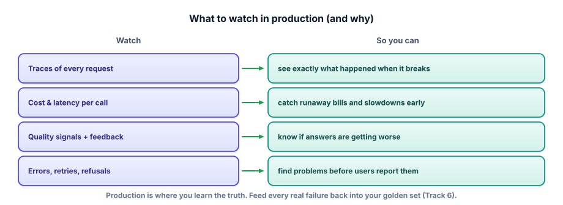

Monitoring in production
Your evals test what you thought of. Real users do what you didn’t. Monitoring is how you see the truth of your system in the wild — and turn its failures into the next round of improvements.
Why monitoring is non-negotiable
A golden set can only contain cases you imagined. Production is full of cases you didn’t: phrasings you never anticipated, edge inputs, and slow drift as the world changes and your data grows stale. On top of that, cost and latency behave differently under real traffic than on your laptop. So you instrument the running service to answer three questions continuously: What is it actually doing? Is it healthy (fast, affordable, not erroring)? Is it any good? Without monitoring, you’re flying blind — you only learn something is wrong when a user complains, which is the most expensive way to find out.

What to watch
Four things are worth watching, and each answers a different question.
- Traces — the full record of each request: the prompt, retrieved context, tool calls, the model output, tokens, and timing. This is Track 6’s observability at production scale, and it’s what lets you debug a specific bad answer by seeing exactly what happened — was the retrieval wrong, or the generation?
- Cost & latency per request — so a prompt that ballooned or a slow model shows up as a metric, not a surprise invoice.
- Quality signals — thumbs up/down, whether the user re-asked or abandoned, and periodic online evals (an LLM judge scoring a sample of live traffic) to catch quality drift the golden set missed.
- Errors, retries, refusals — spikes here are your earliest warning that something broke upstream.
Free and open tools exist for all of this — for example, an open-source tracing/eval platform like Langfuse, or simply structured logging plus OpenTelemetry — but the concept matters more than the vendor: capture every request as a trace, roll traces up into metrics and dashboards, and alert on the ones that matter.
The loop that makes it worth it
Monitoring isn’t just dashboards to stare at — it’s the input to a loop. When you spot a class of failure in production (a question type that gets bad answers, an injection that slipped past), you do two things: fix it, and add it to your golden set so the eval gate (last lesson) prevents it forever.
Real user thumbs-downs become new test cases; live traffic becomes the source of your next eval improvements. This is the flywheel from Track 6 and Track 12, now closed end to end: monitor → find failures → fix + add to golden set → the gate blocks that failure forever → monitor again.
A system wired this way gets more reliable the longer it runs.
Watch an incident hide inside the average
Slowly raise the share of requests hitting a slow path. Keep your eye on the mean while p95 takes off — this is why nobody alerts on averages.
- Golden sets test the anticipated; production reveals the unanticipated — new phrasings, edge cases, and drift.
- Watch four things: traces, cost & latency, quality signals (feedback + online evals), and errors/retries/refusals.
- Traces let you debug a specific bad answer by seeing retrieval vs generation — Track 6 at scale.
- Close the loop: production failures become new golden-set cases, so the eval gate prevents recurrence.
- A monitored, feedback-wired system gets more reliable over time.
Users report that your assistant “feels dumber this week,” but nothing errors and no deploy went out. Your golden-set eval still passes. Using what production monitoring gives you, how would you investigate — and why might the golden set look fine while users are unhappy?
▸ Show solution & reasoning
Investigate: pull traces for recent low-rated (thumbs-down) sessions and read what actually happened — check whether retrieval is returning worse context, whether a data source went stale, whether inputs shifted to topics you handle poorly, and whether latency/cost moved. Compare this week’s traffic mix and quality signals to last week’s. Run an online eval (LLM judge) on a sample of live traffic to get a number on real usage, not just the golden set.
Why the golden set looks fine: it’s a fixed snapshot of cases you chose. If real users have drifted to new question types, or your underlying documents changed so retrieval now surfaces stale context, the live experience degrades while the frozen golden set still passes — it doesn’t contain those new cases, and may be running on cached data.
That gap is exactly why you monitor production and run online evals. The golden set proves you didn’t regress on the known cases; monitoring reveals the unknown ones.
The fix loop: identify the failing category from traces, add representative cases to the golden set, then address the root cause — refresh the data, improve retrieval, adjust the prompt. Now the gate covers it going forward.
Your CI eval gate passes on every deploy, yet users are hitting bad answers in production. What’s the most likely explanation?
It’s worth being precise about the division of labor, because interviewers probe it.
Offline evals (the golden set in CI, Track 6 and the last lesson) run before you ship, and answer “did this change break anything we already know about?” They’re reproducible, they gate deploys, and they protect against regression.
Online evals run against live production traffic, and answer “how are we actually doing right now, on real inputs?” They catch drift, novel failure modes, and quality changes that have nothing to do with a deploy — a data source going stale, a shift in what users ask.
Neither replaces the other. Offline is your regression shield, online is your reality check, and they feed each other: online failures become offline test cases.
Two practical techniques round this out.
Sampling for human review — no team can read every trace, so you review a small random sample, plus a targeted low-rated one, on a regular cadence. It surfaces subtle issues that no metric names.
Guarded rollouts — when you change a model or prompt, release it to a small slice of traffic first and compare its online quality, cost, and latency against the current version before going wide. It is the online equivalent of the eval gate, catching problems that only appear on real users.
Put together, the full picture of production LLM quality is a pipeline: offline evals gate the deploy, a canary tests it on real traffic, monitoring watches the fleet, human review samples the truth, and every failure flows back into the golden set. That closed loop is what “LLMOps” actually means — and describing it is how you show you can keep an AI product healthy, not just launch one.
You can now build, package, gate, deploy, and watch an LLM service. Let’s consolidate it the way an interviewer will test it. Next: the interview check.